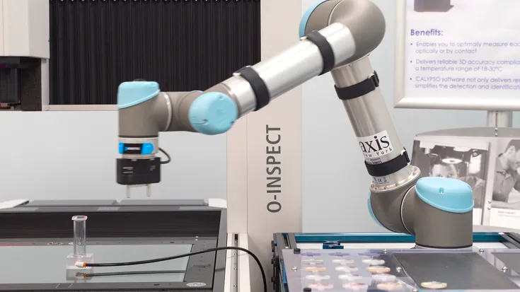

EMPRESAS FABRICANTES
UNIVERSAL ROBOTS
Fundada em 2005, por Esben Østergaard, Kasper Støy e Kristian Kassow que se conheceram na universidade do sul da dinamarca inspirados pelo potencial da robótica e suas tecnologias, mas frustrados com as suas limitações na indústria, eles se propuseram para inovar o campo robótico industrial. Eles queriam robôs mais versáteis facilmente programáveis para serem reaproveitados para várias funções na fábrica, eles visavam simplificar e aprimorar a automação nas fábricas. O primeiro projeto seria um robô de brinquedo, tão simples que até uma criança conseguiria programar. O segundo observou a necessidade da indústria alimentícia da Dinamarca com uma automação flexível permitindo que os próprios funcionários configurem linhas de produção para novos produtos. Os robôs tradicionais da época mostravam-se complexos e rígidos para a tarefa exigida, levando a equipe a trazer uma solução melhor. A principal meta da equipe era construir um ecossistema. Imaginavam um sistema de código aberto onde todos poderiam usar métodos inovadores na produção.
